Menú
Cocina China
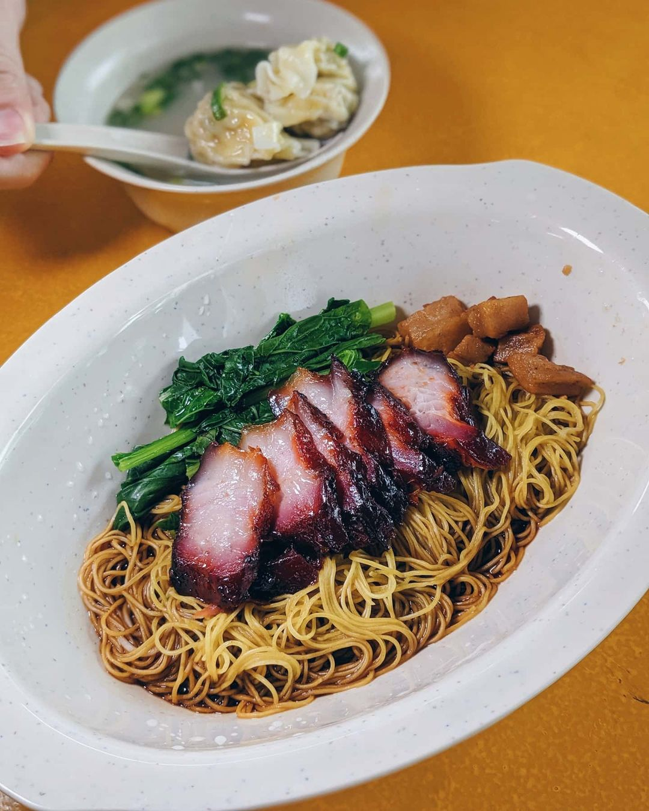
Wanton Mee
Ingredientes:
- Fideos wonton
- Pak choy
- Aceite vegetal
- Cerdo char siu
- Pimienta blanca molida
- Pimientos verdes
- Vinagre de arroz
- Envolturas cuadradas de wonton
- Carne de cerdo molida
- Camarones
- Huevo
- Jengibre
- Salsa de soja
- Salsa de ostras
- Caldo de pollo en polvo
- Aceite de sésamo
- Sal
- Azúcar
- Pimienta blanca molida
- Cebolletas
- Dientes de ajo
- Setas chinas
- Agua
- Almidón de maíz
- Aceite de ajo
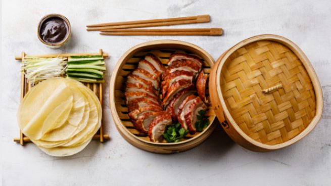
El pato Pekinés
Ingredientes:
- Pato
- Panqueques
- Cebolletas
- Pepinos
- Salsa hoisin
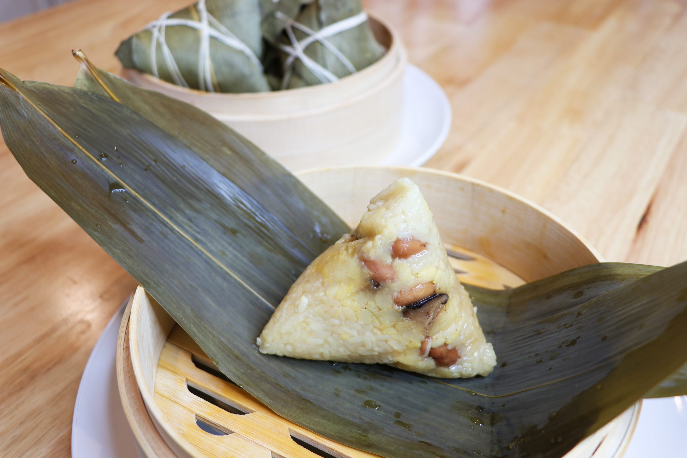
Zongzi
Ingredientes:
- Hoja de bambú
- Arroz glutinoso
- Carne de cerdo
- Hongos shiitake
- Frijoles azuki
- Sal
- Aceite de sésamo
- Salsa de soja
- Ajo
- Jengibre
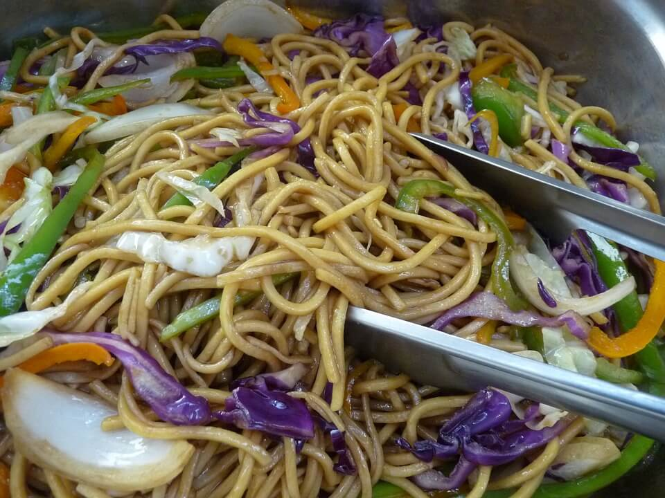
Chow Mein
Ingredientes:
- Fideos de huevo deshidratados
- Caldo de pollo
- brotes de soja
- pimiento rojo
- Cebollin
- Salsa de Soja
- Aceite de sésamo
- Aceite vegetal
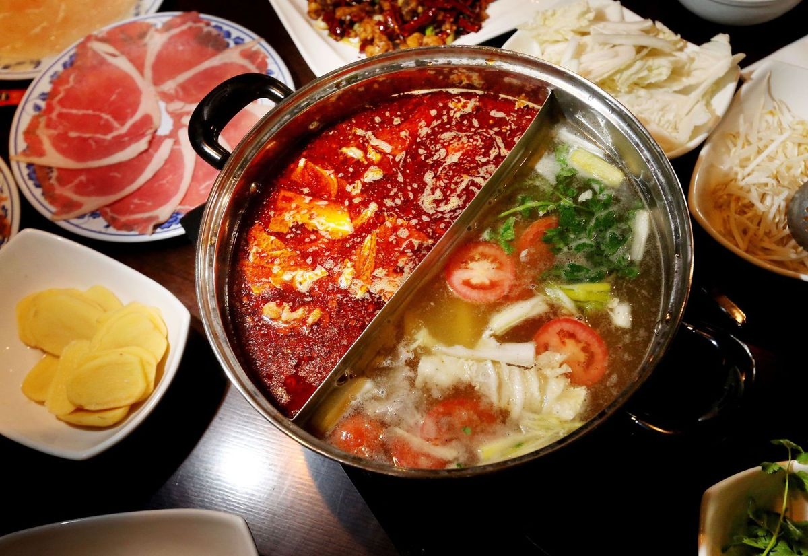
HUO GUO
Ingredientes:
- Costilla de cerdo
- Dientes de ajo
- Setas Shiitake
- Kamaboko (o bolitas de pescado o palitos de cangrejo)
- Col china
- Tofu
- Camarones
- Fish cake
Cocina Japonesa
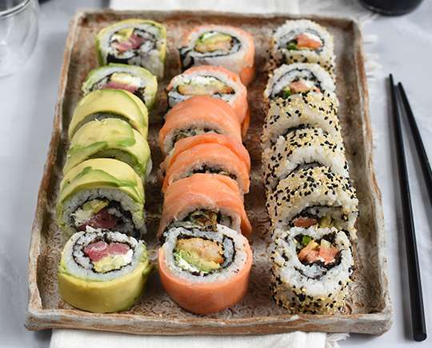
Sushi
Ingredientes:
- Pescado
- Arroz
- Nori (alga marina)
- Wasabi (rábano picante)
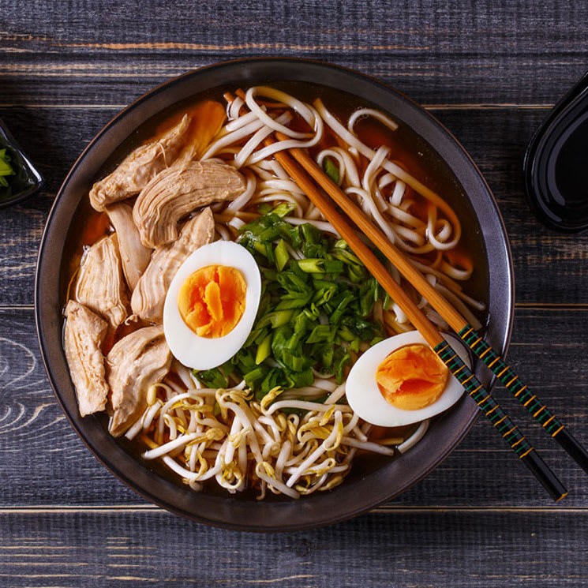
Ramen
Ingredientes:
- Fideos
- Caldo de huesos de cerdo o pollo
- Carne
- Verduras
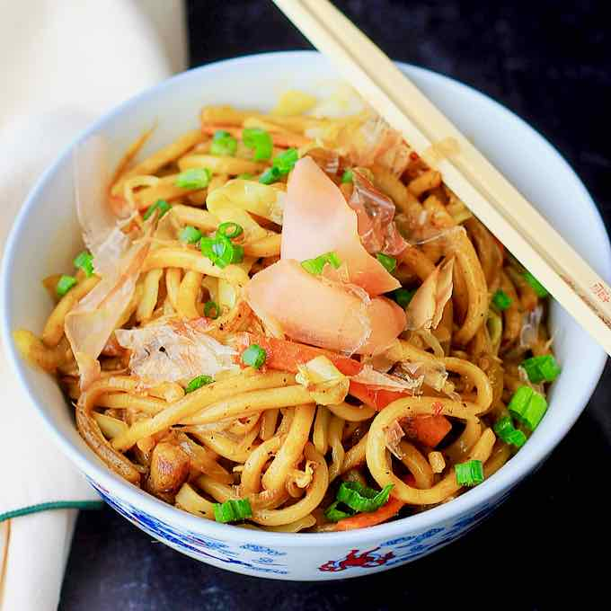
Udon
Ingredientes:
- Fideos udon
- Caldo de pollo en polvo
- Salsa de soja
- Carne de cerdo
- Cebolletas
- Negi (cebolla verde japonesa)

Takoyaki
Ingredientes:
- Masa de harina
- Trozos de pulpo
- Cebolletas
- Jengibre
- Salsa takoyaki
- Mayonesa
- Katsuobushi (copos de bonito seco)

Onigiri
Ingredientes:
- Arroz
- Alga nori
- Rellenos (por ejemplo, salmón, atún, ciruela encurtida)
Cocina Coreana del Sur
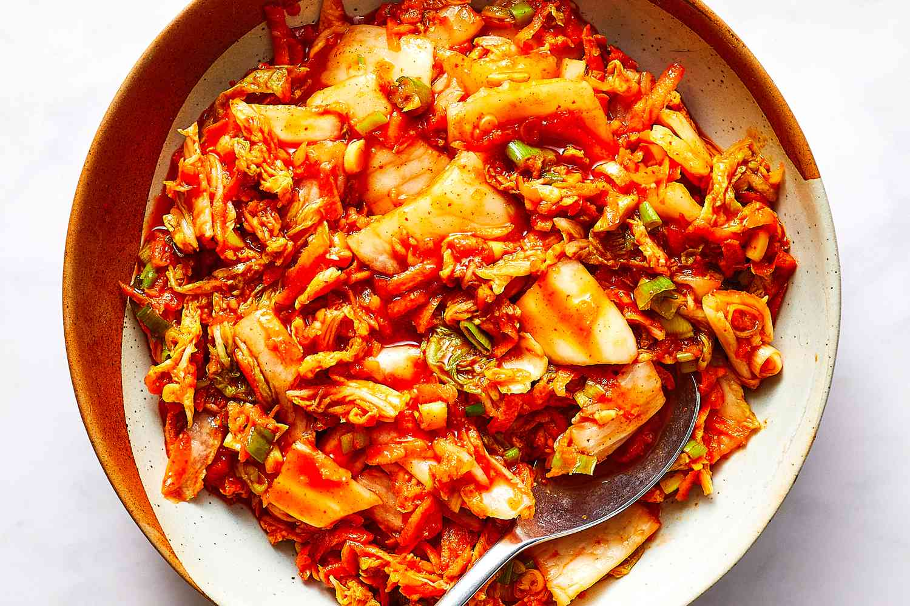
Kimchi
Ingredientes:
- Repollo chino
- Sal
- Ajo
- Jengibre
- Cebolletas
- Pimiento rojo en polvo
- Harina de arroz glutinoso
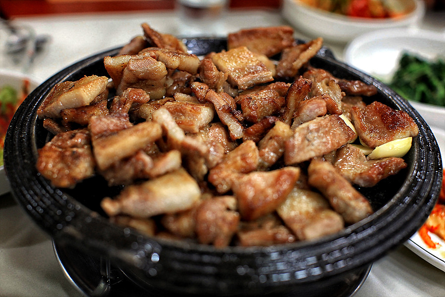
Samgyeopsal
Ingredientes:
- Panceta de cerdo
- Salsa ssamjang
- Acompañamientos (por ejemplo, lechuga, pepino, kimchi)

Bulgogi
Ingredientes:
- Carne marinada (normalmente carne de res)
- Salsa de soja
- Azúcar
- Ajo
- Jengibre
- Cebolleta
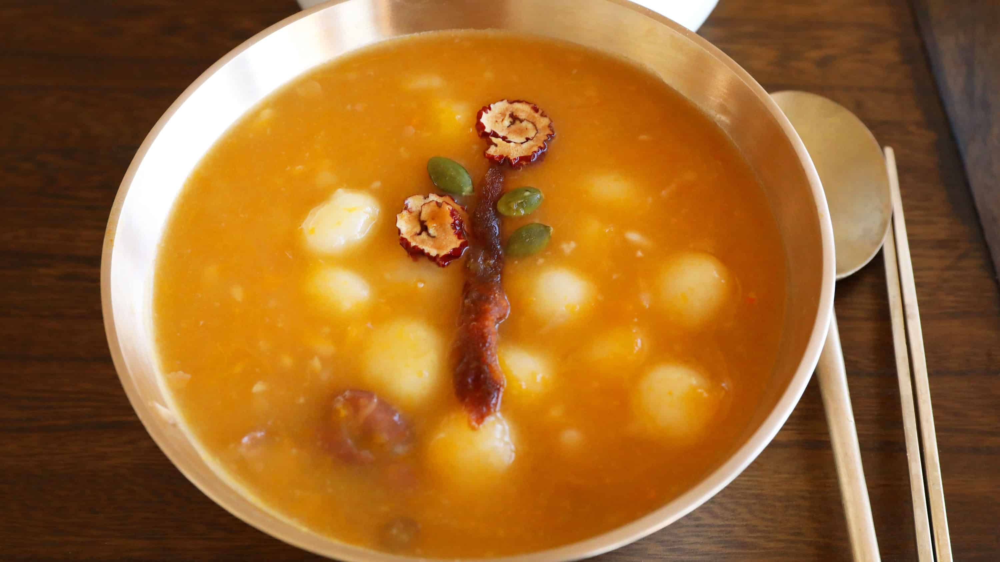
Hobakjuk
Ingredientes:
- Calabaza
- Arroz glutinoso
- Azúcar
- Agua
- Sal
- Pipas de calabaza

Japchae
Ingredientes:
- Fideos de batata
- Carne de res
- Verduras (por ejemplo, champiñones, espinacas, zanahorias)
- Salsa de soja
- Azúcar
- Aceite de sésamo